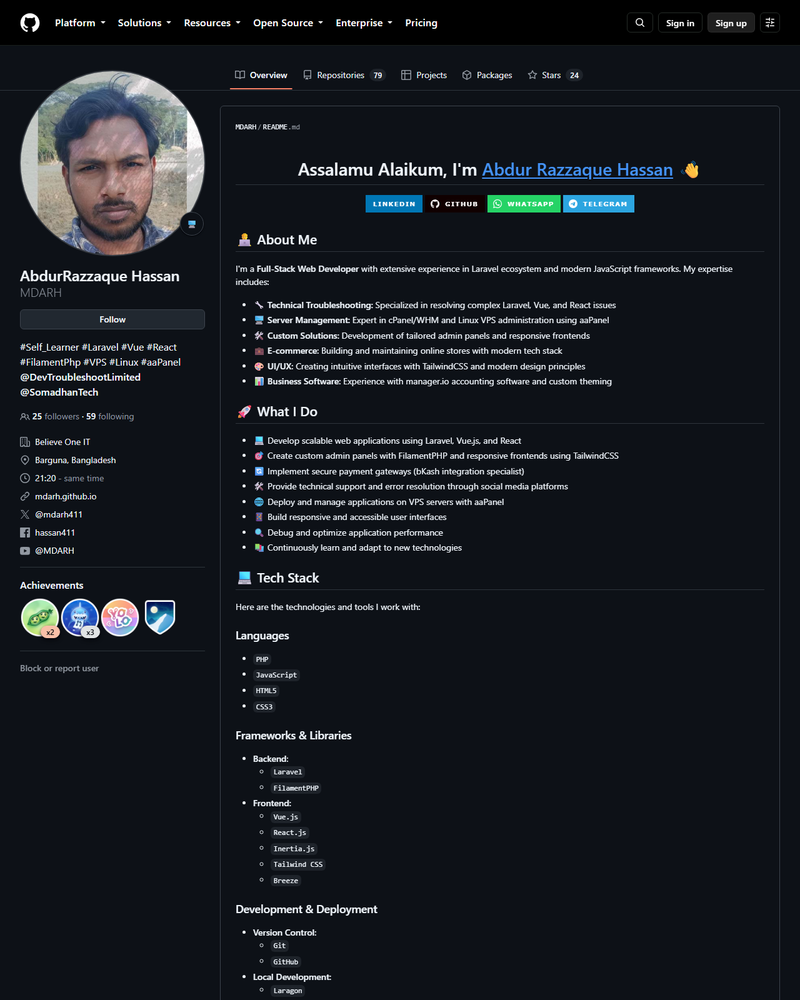

MHB
Mission Hacker Bangladesh
Cyber Security Training
Assignment No. 02
Professional Profiles
& Linux Cheatsheet
LinkedIn · GitHub · Personal Command Reference
BATCH — 11
—Table of Contents
2.1 Profile link and identity
2.2 Screenshot of the live profile
3.1 Profile link and identity
3.2 Screenshot of the live profile
4.1–4.12 Core commands carried forward from Assignment 01
4.13–4.17 Newly added common commands for personal use
1.Assignment Overview
This report is my submission for the second assignment of the Ethical Hacking & Cybersecurity Practical (Batch-11) programme conducted by Mission Hacker Bangladesh under the guidance of mentor Sha Jalal. The assignment requires creating professional developer profiles, documenting them with screenshots, and maintaining a personal Linux command cheatsheet.
| Task | Requirement | Section | Status |
|---|
| 01 | Create LinkedIn profile and provide profile link with screenshot | Section 2 | Completed |
| 02 | Create GitHub profile and provide profile link with screenshot | Section 3 | Completed |
| 03 | Create a complete commands cheatsheet for personal use | Section 4 | Completed |
Cheatsheet approach
Section 4 keeps all basic Linux commands practised in Assignment 01, then adds further everyday commands (Git, environment/shell, text utilities, security-oriented helpers and system administration) so this document can serve as my ongoing personal reference.
2.Task 01 — LinkedIn Profile
I have created and maintained a professional LinkedIn profile for networking, career visibility and documenting my work in cybersecurity and full-stack development.
Md. Abdur Razzaque
Profile URL: https://www.linkedin.com/in/devhassan41
Headline: Cyber Security Specialist | Full Stack Laravel Developer · Location: Dhaka, Bangladesh · Custom public URL: linkedin.com/in/devhassan41
2.1 Why LinkedIn matters for this course
- Builds a verifiable professional identity alongside technical skills learned in class.
- Makes it easier to connect with mentors, peers and the cybersecurity community.
- Supports responsible career growth while studying ethical hacking and cyber law.
2.2 Screenshot of the live profile
Figure 1 — Live LinkedIn profile at https://www.linkedin.com/in/devhassan41 (captured 8 September 2026)
3.Task 02 — GitHub Profile
I have created and maintained a GitHub profile for publishing code, documenting learning progress and collaborating on open-source and course-related work.
AbdurRazzaque Hassan · @MDARH
Profile URL: https://github.com/MDARH
Focus: Laravel, Vue, React, FilamentPHP, Linux/VPS · Repositories: 79 · Followers: 25 · Portfolio: mdarh.github.io
3.1 Why GitHub matters for this course
- Version control is essential for labs, notes, scripts and future penetration-testing tooling.
- A public profile demonstrates consistent practice and transparent learning history.
- GitHub pairs naturally with the Linux and Git commands collected in the cheatsheet below.
3.2 Screenshot of the live profile

Figure 2 — Live GitHub profile at https://github.com/MDARH (captured 8 September 2026)
4.Task 03 — Complete Linux Commands Cheatsheet
This cheatsheet is for my personal daily use. Sections 4.1–4.12 carry forward the command set practised in Assignment 01. Sections 4.13–4.17 add further common commands I use for development, administration and security study. Newly added rows are marked NEW.
4.1 Navigation and Filesystem
| Command | Function |
|---|
pwd | Print the full path of the current working directory |
ls | List the contents of a directory |
ls -l | Long listing — permissions, owner, size and modification time |
ls -a | Include hidden files (names beginning with a dot) |
ls -lah | Long listing, all files, human-readable sizes |
ls -R | List directories and all their contents recursively |
cd /path | Change to the specified directory |
cd ~ | Return to the current user's home directory |
cd .. | Move up one level to the parent directory |
cd - | Switch back to the previous working directory |
tree | Display the directory structure as a tree |
realpath file NEW | Resolve and print the absolute path of a file or directory |
basename /a/b/c NEW | Print only the final component of a path |
dirname /a/b/c NEW | Print the parent directory portion of a path |
4.2 File and Directory Operations
| Command | Function |
|---|
mkdir dirname | Create a new directory |
mkdir -p a/b/c | Create a full nested directory path in one step |
rmdir dirname | Remove an empty directory |
touch file.txt | Create an empty file, or update an existing file's timestamp |
cp source dest | Copy a file |
cp -r dir1 dir2 | Copy a directory and everything inside it |
mv source dest | Move a file or directory, or rename it |
rm file | Delete a file |
rm -r dir | Delete a directory recursively |
rm -i file | Delete with a confirmation prompt (safer) |
ln -s target link | Create a symbolic link |
file name | Identify the actual type of a file |
stat file | Show detailed metadata: size, inode, access and modify times |
du -sh dir | Show the total size of a directory |
rsync -av src/ dest/ NEW | Efficient sync/copy of files and directories (local or remote) |
install -m 755 src dest NEW | Copy a file and set permissions in one step |
Caution
rm -rf deletes permanently and without confirmation — there is no recycle bin on the Linux command line. The path must always be checked before pressing Enter, and rm -rf / must never be run.
4.3 Viewing and Editing File Content
| Command | Function |
|---|
cat file | Display the entire contents of a file |
tac file | Display file contents in reverse line order |
less file | View a large file page by page (q to quit) |
more file | Simpler page-by-page viewer |
head -n 10 file | Show the first 10 lines |
tail -n 10 file | Show the last 10 lines |
tail -f logfile | Follow a log file live as new lines are written |
wc -l file | Count the lines in a file |
nano file | Simple terminal text editor (Ctrl+O save, Ctrl+X exit) |
vim file | Advanced modal editor (:wq to save and quit) |
echo "text" > file | Write text to a file, overwriting existing content |
echo "text" >> file | Append text to the end of a file |
tee file NEW | Write stdin to a file while also printing it to the terminal |
nl file NEW | Number the lines of a file while displaying it |
4.4 Searching and Filtering
| Command | Function |
|---|
grep "word" file | Search for a pattern inside a file |
grep -i "word" file | Case-insensitive search |
grep -r "word" /dir | Search recursively through a directory tree |
grep -v "word" file | Show only the lines that do not match |
find /path -name "*.txt" | Find files by name pattern |
find / -type d -name conf | Find directories by name |
locate filename | Fast filename lookup using a prebuilt index |
which command | Show the full path of an executable in $PATH |
whereis command | Locate the binary, source and manual page for a command |
sort file / uniq | Sort lines; remove or count duplicate lines |
cut -d ":" -f 1 /etc/passwd | Extract a specific field from delimited text |
awk '{print $1}' file | Field-based text processing |
sed 's/old/new/g' file | Stream editing — find and replace text |
diff file1 file2 NEW | Show line-by-line differences between two files |
xargs cmd NEW | Build and run commands from stdin items (often after find) |
4.5 Permissions and Ownership
| Command | Function |
|---|
chmod 755 file | Set permissions numerically (owner rwx, group r-x, others r-x) |
chmod +x script.sh | Make a script executable |
chmod u+w,o-r file | Modify permissions symbolically |
chown user:group file | Change the owner and group of a file |
chgrp group file | Change only the group ownership |
umask | Show or set the default permission mask for new files |
sudo command | Execute a single command with administrative privileges |
su - user | Switch to another user account |
getfacl file NEW | Display Access Control Lists (ACLs) on a file |
lsattr file NEW | List special file attributes (immutable, append-only, etc.) |
Permission values: read = 4, write = 2, execute = 1. The three digits apply to owner, group and others respectively — so chmod 644 gives the owner read+write (6) and everyone else read-only (4).
4.6 User and Group Management
| Command | Function |
|---|
whoami | Display the current username |
id | Show user ID, group ID and group memberships |
who / w | List users currently logged in and what they are running |
sudo adduser name | Create a new user account |
sudo deluser name | Delete a user account |
sudo passwd name | Set or change a user's password |
sudo usermod -aG sudo name | Add a user to the sudo (administrator) group |
groups | List the groups the current user belongs to |
cat /etc/passwd | View the local user account database |
last NEW | Show recent login history |
sudo visudo NEW | Safely edit the sudoers file |
4.7 Process Management
| Command | Function |
|---|
ps aux | List all running processes with owner and resource usage |
top | Live, continuously updating process monitor |
htop | Interactive colour process viewer (easier than top) |
kill PID | Terminate a process by its process ID |
kill -9 PID | Force-terminate an unresponsive process |
killall name | Terminate all processes matching a name |
jobs / fg / bg | Manage background and foreground jobs in the shell |
command & | Run a command in the background |
systemctl status service | Check the state of a system service |
sudo systemctl start|stop|restart service | Control a system service |
pgrep -a name NEW | Find process IDs (and command lines) by name |
nice -n 10 cmd NEW | Start a process with a modified CPU priority |
watch -n 2 cmd NEW | Re-run a command every 2 seconds and show output |
4.8 Package Management (APT)
| Command | Function |
|---|
sudo apt update | Refresh the list of available packages |
sudo apt upgrade | Upgrade installed packages |
sudo apt full-upgrade | Upgrade, allowing packages to be added or removed as needed |
sudo apt install package | Install a package |
sudo apt remove package | Remove a package, keeping its configuration files |
sudo apt purge package | Remove a package together with its configuration |
sudo apt autoremove | Remove orphaned dependencies |
apt search keyword | Search the repositories for a package |
apt show package | Display detailed information about a package |
dpkg -i file.deb | Install a local .deb package file |
dpkg -l | List all installed packages |
apt list --upgradable NEW | List packages that have updates available |
apt-cache depends pkg NEW | Show dependency tree for a package |
4.9 Networking
| Command | Function |
|---|
ip a (or ifconfig) | Show network interfaces and assigned IP addresses |
ip route | Display the routing table and default gateway |
ping -c 4 host | Test reachability of a host |
traceroute host | Show the network path taken to reach a host |
netstat -tulnp / ss -tulnp | List listening ports and the processes bound to them |
nslookup domain / dig domain | Query DNS records for a domain |
whois domain | Retrieve domain registration information |
curl -I https://site | Fetch HTTP response headers from a web server |
wget URL | Download a file over HTTP/HTTPS |
hostname -I | Display the machine's IP address |
arp -a | Show the ARP cache of known hosts on the local network |
ssh user@host | Open an encrypted remote shell session |
scp file user@host:/path | Copy files securely between machines |
curl -O URL NEW | Download a file, keeping the remote filename |
wget -c URL NEW | Resume a partially downloaded file |
nc -zv host port NEW | Quick TCP port connectivity check (netcat) |
sudo ufw status NEW | Show Uncomplicated Firewall status (defensive) |
Legal reminder
Reconnaissance and scanning commands must only be pointed at systems you own or have written permission to test. Scanning third-party hosts without authorisation is an offence under Bangladeshi cyber legislation.
4.10 System Information and Monitoring
| Command | Function |
|---|
uname -a | Show kernel name, version and machine architecture |
cat /etc/os-release | Display distribution name and version |
lscpu | Show processor details |
free -h | Display memory and swap usage in readable units |
df -h | Show disk space usage per filesystem |
lsblk | List block devices and partitions |
uptime | Show how long the system has been running and its load average |
date | Display or set the system date and time |
history | List previously executed commands |
dmesg | Print kernel ring-buffer messages |
lsusb / lspci | List connected USB and PCI hardware devices |
journalctl -xe NEW | View recent systemd journal logs with explanations |
hostnamectl NEW | Show or set the system hostname and related metadata |
timedatectl NEW | Show or configure system timezone and clock sync |
4.11 Archiving and Compression
| Command | Function |
|---|
tar -cvf archive.tar dir/ | Create an uncompressed tar archive |
tar -czvf archive.tar.gz dir/ | Create a gzip-compressed archive |
tar -xzvf archive.tar.gz | Extract a gzip-compressed archive |
zip -r archive.zip dir/ | Create a ZIP archive |
unzip archive.zip | Extract a ZIP archive |
gzip file / gunzip file.gz | Compress or decompress a single file |
md5sum / sha256sum file | Generate a checksum to verify file integrity |
xz -k file NEW | Compress a file with xz (keep original with -k) |
7z x archive.7z NEW | Extract a 7-Zip archive |
4.12 Shell Operators and Keyboard Shortcuts
| Operator / Shortcut | Function |
|---|
| (pipe) | Send the output of one command into another, e.g. ls -l | grep ".txt" |
> / >> | Redirect output to a file — overwrite / append |
&& / || | Run the next command only if the previous succeeded / only if it failed |
2>/dev/null | Discard error messages |
man command | Open the manual page for a command |
command --help | Show a short usage summary |
clear / Ctrl + L | Clear the terminal screen |
| Tab | Auto-complete a file, directory or command name |
| Ctrl + C | Interrupt and stop the running command |
| Ctrl + Z | Suspend the running command to the background |
| Ctrl + R | Search backwards through command history |
Ctrl + D / exit | Close the terminal session |
| Ctrl + A / Ctrl + E NEW | Jump to start / end of the current command line |
| Ctrl + U / Ctrl + K NEW | Delete from cursor to start / to end of the line |
4.13 Environment, Variables and Shell Helpers NEW
| Command | Function |
|---|
env / printenv | List environment variables |
export VAR=value | Set an environment variable for the current shell and child processes |
echo $PATH | Show the executable search path |
alias ll='ls -lah' | Create a short alias for a longer command |
unalias ll | Remove an alias |
source ~/.bashrc | Reload shell configuration without opening a new terminal |
type command | Show whether a name is an alias, builtin, function or binary |
time command | Measure how long a command takes to run |
sleep 5 | Pause for 5 seconds |
history | grep ssh | Search previously used commands |
4.14 Git Version Control NEW
Essential for my GitHub workflow and course repositories.
| Command | Function |
|---|
git clone URL | Download a remote repository |
git status | Show changed, staged and untracked files |
git add . | Stage all changes in the working tree |
git commit -m "msg" | Record a snapshot with a message |
git push | Upload local commits to the remote |
git pull | Fetch and merge remote changes |
git branch | List local branches |
git checkout -b name | Create and switch to a new branch |
git log --oneline | Compact commit history |
git diff | Show unstaged changes |
git remote -v | List configured remotes |
git config --global user.name "Name" | Set your global Git username |
4.15 Text, Encoding and Quick Analysis NEW
| Command | Function |
|---|
base64 file / base64 -d | Encode or decode Base64 data |
xxd file / hexdump -C file | Hex dump of a binary or text file |
strings binary | Extract printable strings from a binary |
cmp file1 file2 | Byte-compare two files (silent if identical) |
column -t file | Format text into neat columns |
tr 'a-z' 'A-Z' | Translate or delete characters from stdin |
rev | Reverse characters on each line |
shuf file | Shuffle lines randomly |
4.16 Session Multiplexing & Remote Comfort NEW
| Command | Function |
|---|
tmux / tmux new -s lab | Start a persistent terminal multiplexer session |
tmux attach -t lab | Re-attach to a named tmux session |
screen -S name | Start a GNU screen session |
ssh-keygen -t ed25519 | Generate a modern SSH key pair |
ssh-copy-id user@host | Install your public key on a remote host |
scp -r dir user@host:/path | Recursively copy a directory over SSH |
4.17 Security Study Helpers (Authorised Use Only) NEW
| Command | Function |
|---|
nmap -sn 192.168.1.0/24 | Host discovery ping scan on a network you own / are authorised to test |
nmap -sV -p 22,80,443 host | Service/version scan on selected ports (authorised targets only) |
sudo tcpdump -i eth0 -n | Capture and display packets on an interface |
openssl s_client -connect host:443 | Inspect a TLS/SSL handshake and certificate |
openssl rand -hex 16 | Generate random hex bytes (tokens, lab passwords) |
sudo fail2ban-client status | Check Fail2ban protection status if installed |
Authorised use only
Tools such as Nmap and tcpdump are for learning and defensive work on systems I own or have explicit written permission to test. I will not scan or probe third-party networks without authorisation.
Outcome of Task 03
I now have a single personal cheatsheet that preserves the Assignment 01 command foundation and extends it with Git, shell environment, encoding, session and authorised security-study commands for ongoing class and VPS work.
5.Conclusion
For Assignment 02 I completed all three required tasks:
- LinkedIn — profile created and documented with live link and screenshot: https://www.linkedin.com/in/devhassan41
- GitHub — profile created and documented with live link and screenshot: https://github.com/MDARH
- Commands cheatsheet — complete personal reference built from Assignment 01 basics plus newly added common commands for daily use.
These profiles and the cheatsheet will support my continued learning throughout the Ethical Hacking & Cybersecurity Practical programme.
6.Declaration
I, Md. Abdur Razzaque, hereby declare that this Assignment 02 submission is my own work. The LinkedIn and GitHub profiles linked above belong to me, and the screenshots were taken from those live profiles. The commands cheatsheet expands my Assignment 01 practice notes for personal study use.
I further undertake to apply security tools and reconnaissance commands only on systems that I own or for which I hold explicit written authorisation.
Student Signature / Name
Md. Abdur Razzaque
Date
8 September 2026
References
- Mission Hackers Bangladesh — Ethical Hacking & Cybersecurity Practical (Batch-11), Class 02 assignment brief.
- My Assignment 01 Linux command practice notes (foundation for this cheatsheet).
- LinkedIn profile: https://www.linkedin.com/in/devhassan41
- GitHub profile: https://github.com/MDARH
- GNU Coreutils and man-pages documentation for command behaviour reference.